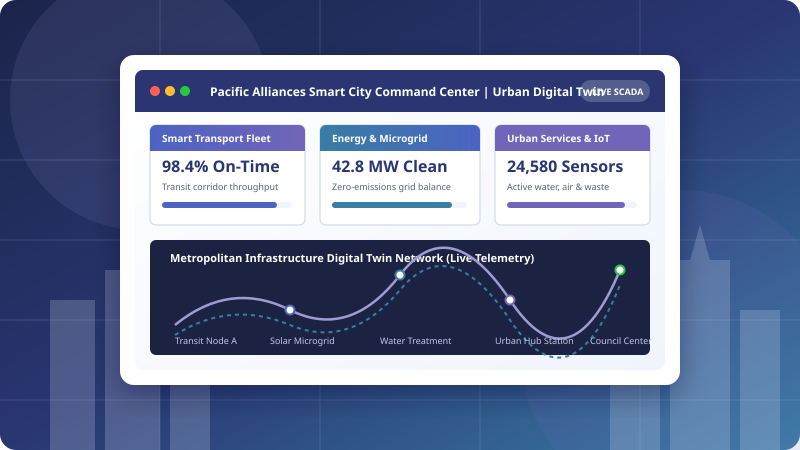

Smart Transport & Mobility
We deploy intelligent transport algorithms, automated traffic signal coordination, and transit fleet telemetry to decongest city corridors and optimize public transit efficiency.
Intelligent Urban Infrastructure, Sustainable Digital Cities
Pacific Alliances Smart City Consultancy LTD is an industry-leading infrastructure consultancy working with municipal councils, transit authorities, and utility partners across the Asia-Pacific. We design and deliver next-generation digital platforms for smart transport, real-time energy monitoring, and unified urban services management.

Transforming metropolitan centers through data-driven infrastructure and smart digital twins
We deploy intelligent transport algorithms, automated traffic signal coordination, and transit fleet telemetry to decongest city corridors and optimize public transit efficiency.
Our cloud telemetry monitors municipal power grids, distributed solar generation, and battery storage systems in real-time, drastically reducing municipal carbon emissions.
From automated stormwater flood monitoring to intelligent waste logistics and environmental air quality sensors, we equip councils with unified situational awareness.
Comprehensive digital solutions engineered for city councils, transit commissions, and utility providers
| Platform Tier | Target Sector | Core Digital Modules | Urban Telemetry & Environmental Analytics | Platform SLA |
|---|---|---|---|---|
| Smart Transit & Mobility Hub | City Transit & Roads Authorities | Dynamic signal priority, autonomous shuttle tracking, real-time passenger congestion mapping | Real-Time SCADA/IoT Sensor Ingestion, AI Predictive Dispatch, Environmental Carbon Footprint Tracking & Anomaly Detection | 99.9% Uptime |
| Renewable Energy & Microgrid Manager | Energy Utilities & Councils | Substation telemetry, automated load shedding, solar-battery storage balancing, emissions audit | 99.95% Uptime | |
| Municipal Urban Services Suite | Local Governments & Shire Councils | IoT smart waste routing, drainage flood level sensors, public lighting controls, digital twin dashboard | Automated GIS mapping, acoustic leak detection, air quality index (AQI) alerts | 99.99% Uptime |
| Universal Smart Infrastructure Standards | Cyber-Physical Security (ISO 27001), High-Availability Distributed Edge Computing, Open City Data API Integration (Smart Cities Council Compliance) | |||
Lead multi-million dollar infrastructure projects shaping tomorrow's connected societies
Industry-leading consultancy remuneration, 13th-month bonus, project completion dividends, and premium corporate medical and dental health coverage.
Work with high-throughput IoT time-series engines, React, TypeScript, Python data science pipelines, Docker, Kubernetes, and digital twin 3D modeling tools.
Enjoy flexible working arrangements combining modern urban campus facilities with work-from-home autonomy, 21 days annual leave, and wellness perks.
Annual AUD $3,500 dedicated budget for smart city international summits, AWS/Azure cloud architecture credentials, and urban planning certifications.
Join an inclusive, multinational advisory team uniting software developers, civil engineers, transport analysts, and environmental planners.
Directly improve daily living conditions for millions of metropolitan residents by reducing traffic delays, safeguarding water grids, and accelerating net-zero goals.
We are actively recruiting passionate web developers, software architects, and data engineers
Department: Smart Transit & Urban Mobility
Location: Melbourne / Singapore (Hybrid)
Architect and deploy real-time transit telematics interfaces and microservices using React, Node.js, and high-performance WebSocket streams.
View Job Description →Department: Critical Infrastructure & Security
Location: Melbourne / Singapore (Hybrid)
Engineer secure, fault-tolerant cloud infrastructures and automated CI/CD pipelines governing critical smart grid SCADA and urban services data.
View Job Description →Department: Energy & Environmental Analytics
Location: Melbourne / Remote
Develop streaming data pipelines for municipal sensor fleets, microgrid battery storage systems, and urban digital twin visualization dashboards.
View Job Description →Structured, transparent, and focused on collaborative problem-solving
Explore our open positions on the Jobs page to find the urban consultancy role that aligns with your expertise.
Submit your credentials and experience through our application form on the Apply page.
Meet with our principal infrastructure consultants and technical directors to discuss real-world municipal engineering challenges.
Receive your consultancy offer package, join the Pacific Alliances team, and begin deploying transformative smart city platforms.
Pacific Alliances Smart City Consultancy respectfully acknowledges the Traditional Custodians of Country throughout Australia and pays our respects to Elders past, present, and emerging. We honor First Nations peoples as the world's oldest continuous engineers, navigators, and environmental custodians, who have cared for these lands, skies, and waterways for more than 65,000 years.
As an infrastructure consultancy partnering with municipal councils and industry leaders, we are dedicated to 'Designing with Country'. We actively collaborate with Traditional Owners to ensure modern urban planning, smart transit systems, and renewable microgrids respect sacred cultural heritage sites, restore native biodiversity, and embrace Indigenous ecological knowledge.
We passionately encourage applications from Aboriginal and Torres Strait Islander civil engineers, software developers, urban designers, and sustainability specialists to lead our smart city projects and shape equitable urban environments for future generations.
Your expertise can transform metropolitan infrastructure across the Asia-Pacific. Explore our open roles or apply today!